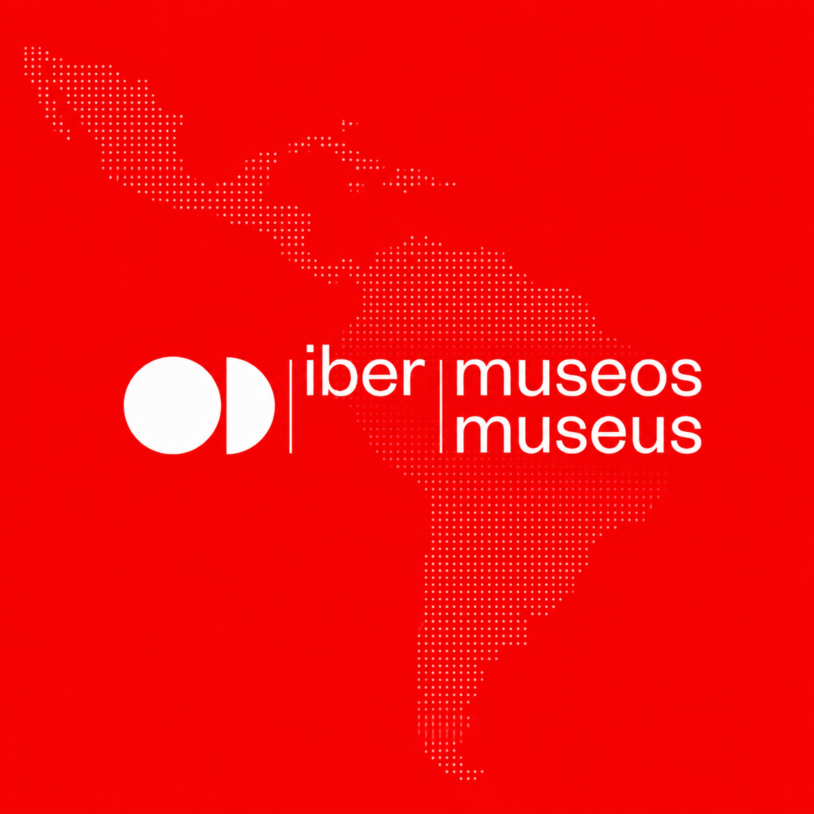

Ibermuseos · Secretaria-Geral Ibero-Americana · Ministério da Cultura do Brasil · UNESCO
Especialista em Diversidade e Inclusão
Projeto “Diversidade em ação: mediação e apropriação social do patrimônio” selecionado para o 12º Encontro Ibero-Americano de Museus, em Santo Domingo, República Dominicana.